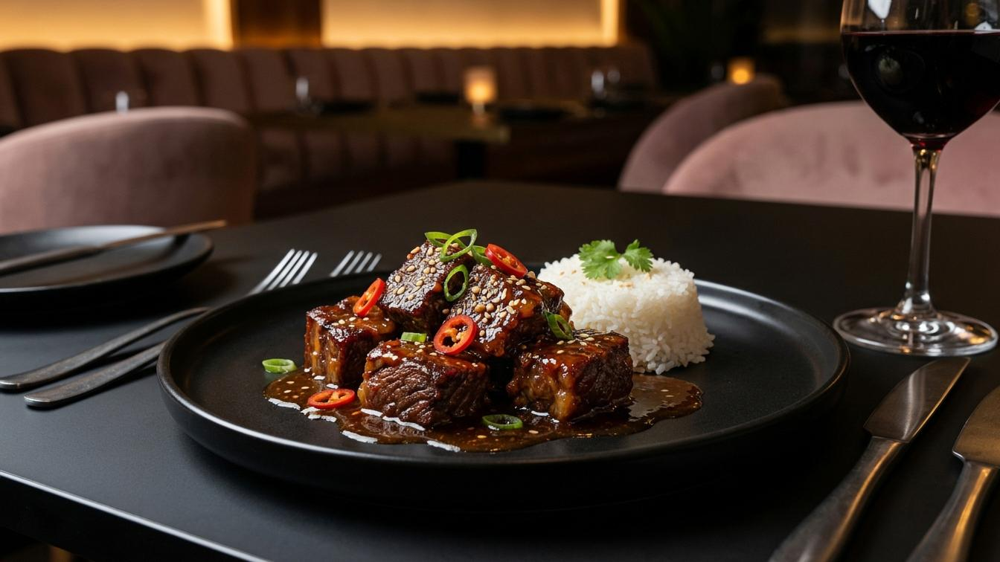

Morceaux de cheval laqués dans un caramel ambré légèrement relevé aux épices douces, oignons et sauce soja.
- Viande
- Cheval
- Accompagnement
- Riz parfumé

17,00 €
Morceaux de cheval laqués dans un caramel ambré légèrement relevé aux épices douces, oignons et sauce soja.